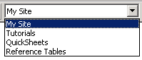
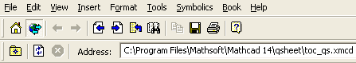

Resources Window |
Choose View > Toolbars > Resources to bring up the Resources toolbar:

The Resources toolbar streamlines access to Mathcad Tutorials, QuickSheets, and Reference Tables. Any Mathcad E-Books or Extension Packs you install are listed as well.
When you open an E-book, such as the QuickSheets or Tutorials or online Help, a new Resources window opens over your main Worksheet window. This window has most of the same menu choices as the main Worksheet window, as well as a Book menu for annotating E-books.
The Resources window uses the E-book toolbar:

The E-book toolbar buttons let you move around, find, copy, print, and save pages in an E-book. Choosing View > Address Bar or clicking on the Web Toolbar button brings up the address bar that shows the pathname to the current E-book file.
You can also browse to any file on your file system or the Web by typing the URL into the Address bar, or into the File > Open dialog. The buttons to the left of the "Address" box let you:
To learn what a button does, hover the cursor over the button until a tooltip shows the title and a description appears on the message line of the Status Bar.